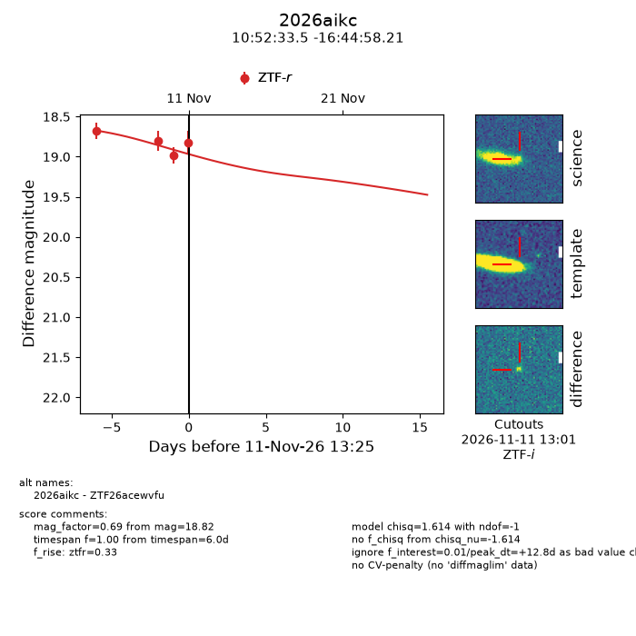
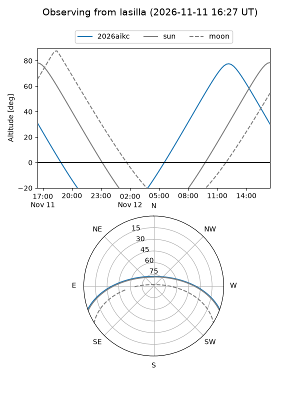
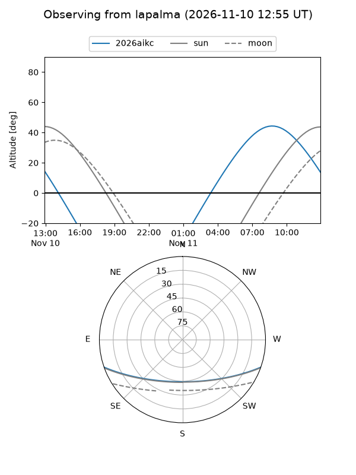
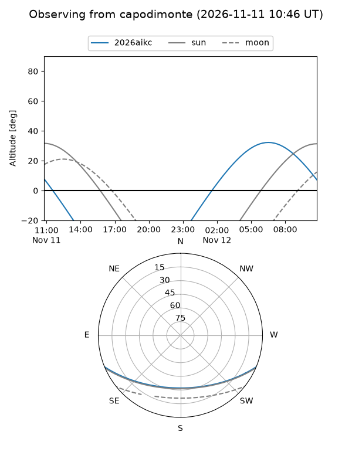
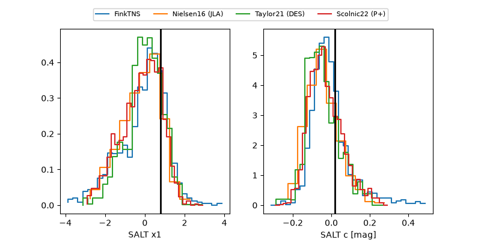

2026aikc
Target 2026aikc at 2026-11-11 13:27
Aliases and brokers:
FINK-ZTF: ztf.fink-portal.org/ZTF26acewvfu
Lasair-ZTF: lasair-ztf.lsst.ac.uk/objects/ZTF26acewvfu
ALeRCE-ZTF: alerce.online/object/ZTF26acewvfu
YSE-PZ: ziggy.ucolick.org/yse/transient_detail/2026aikc
TNS name: wis-tns.org/object/2026aikc
Direct TNS query: direct search
alt names
ZTF26acewvfu (ztf,fink_ztf)
2026aikc (tns,yse)
Coordinates:
equatorial (ra, dec) = 163.1395,-16.74950
equatorial (HMS+DMS) = 10:52:33.47,-16:44:58.21
galactic (l, b) = (266.1796,+37.49676)
Flags:
peak dt: +12.8
Photometry:
last ztfr=18.82
4 ztfr detections
Lightcurve

Visibility



Additional plots
